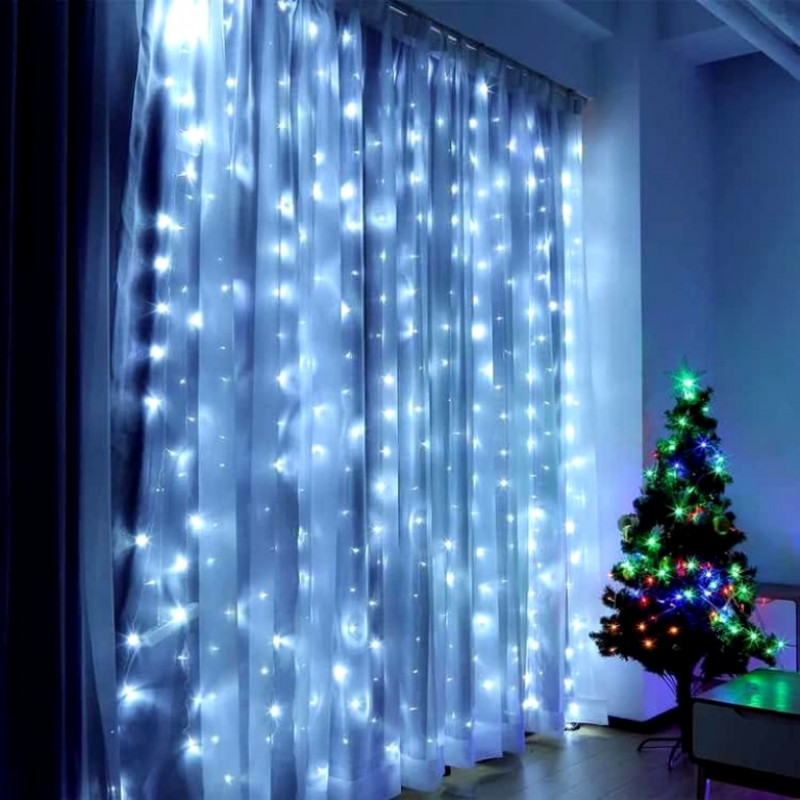
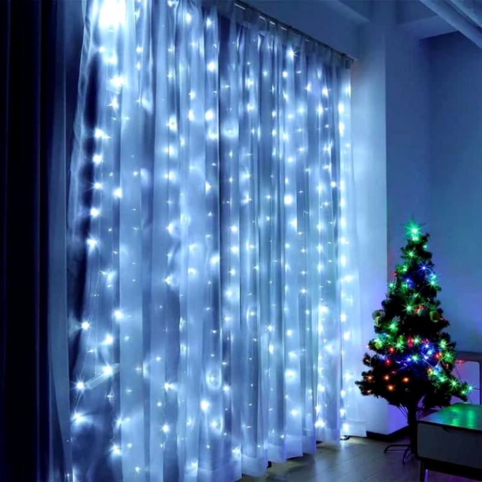
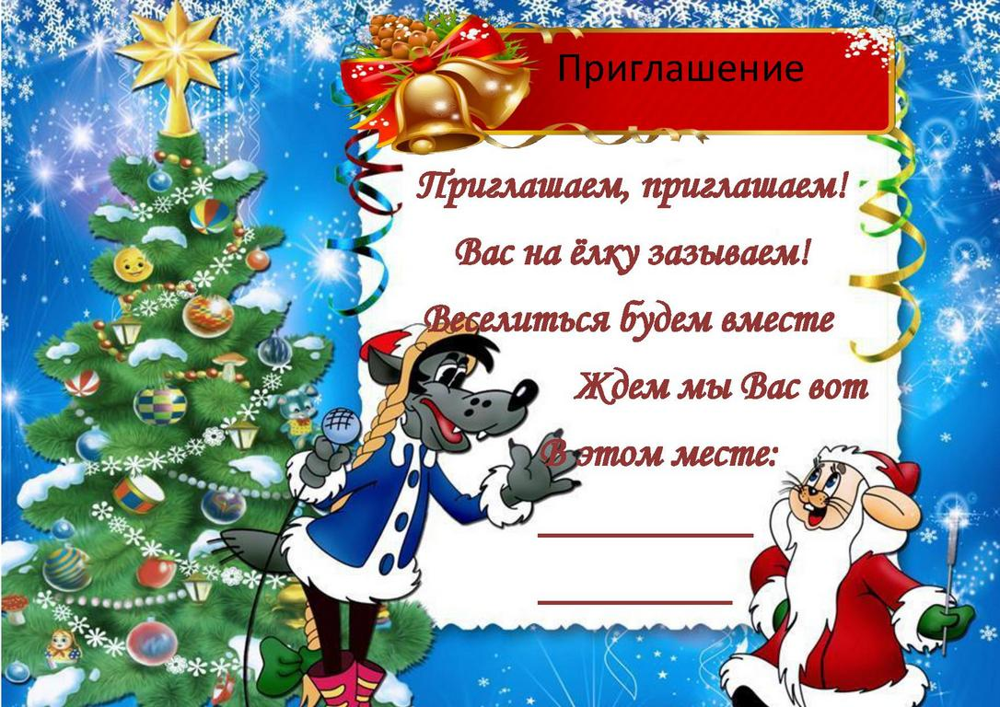

Подготовка к встрече Нового года начинается с хорошего настроения и составления списка дел. Потому что, когда у вас есть список, вам легче правильно распределить время, а времени, как обычно всегда не хватает.
Вот примерный список для организации праздника :
Ёлка традиционно является обязательным атрибутом Нового года. Обычно ёлку украшают мишурой и игрушками, а на макушку надевают звезду или другой подходящий для этого предмет. Стены и окна украшают электрическими гирляндами, мишурой, снежинками и т.д.
 

Пригласите на праздник близких и дорогих вам людей с которыми вы бы хотели провести весь следующий год. Пригласить людей можно разными способами. Например разослать шуточные приглашения.
Хорошая идея для подарка на Новый год – прикольные и забавные вещи, создающие волшебное новогоднее настроение.
Если у вашего друга хорошее чувство юмора, то вот несколько вариантов:
- Пивная каска для футбольных матчей;
- Мини-холодильник для банки пива, работающий от USB-порта;
- Копилка для пробок, чтобы проверить, сколько ты выпил за год.
Если ваш друг спортсмен, то предлагаем следующие варианты подарков:
- Балансборд;
- Магнитный дартс для тренировки меткости и дружеских сражений;
- Именной ежедневник «Дневник тренировок».
Еще одно качество хорошего новогоднего подарка – его актуальность и практичность. Например:
- Фонарик с радио или дополнительными функциями
- Убегающий будильник, который будет звонить, пока вы его не догоните;
- Мини-мышка, которая одевается на палец – оригинальное современное решение;
Новогодние конкурсы это возможность развлечь друзей и родных. Они придадут празднику волшебную и незабываемую атмосферу радости и веселья. Не забудьте приобрести маленькие призы - сувениры для поощрения победителей. Весёлая компания и интересные конкурсы -идеальный рецепт новогоднего праздника!
Блюда в меню лучше включать оригинальные и не слишком жирные, что бы остались силы повеселиться. Но по моему мнению традиционным блюдом новогоднего стола является салат "Оливье"